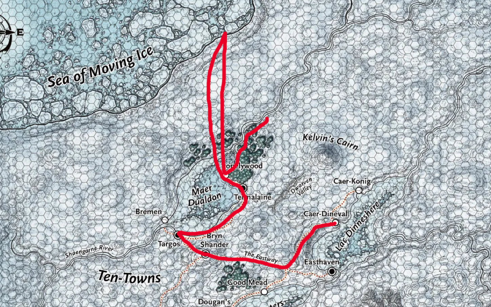
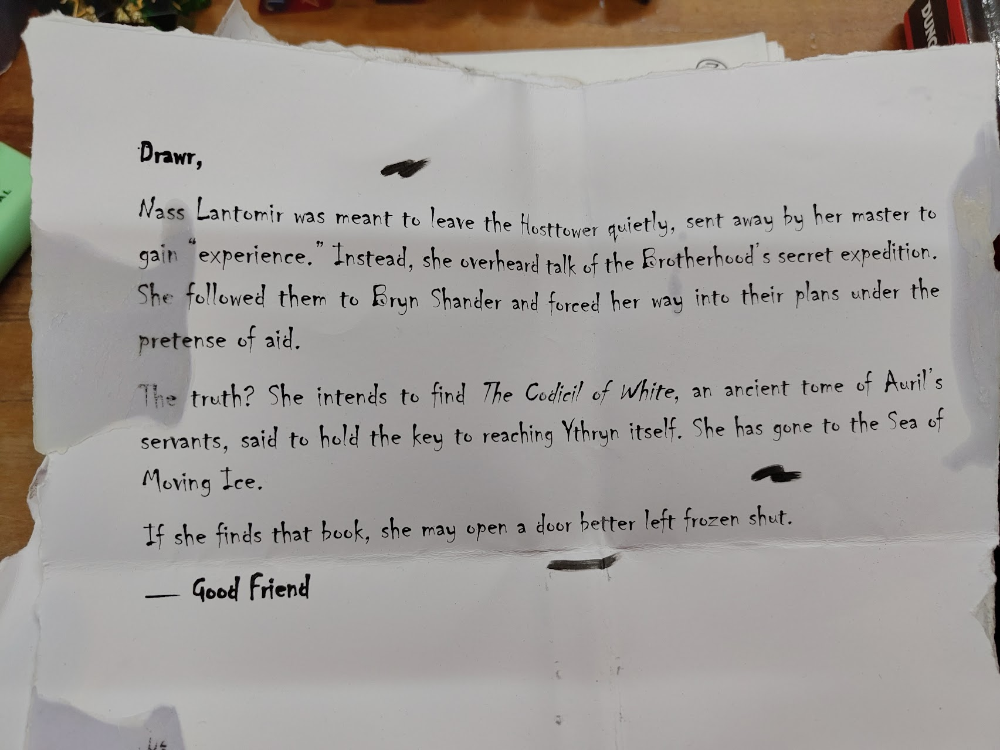
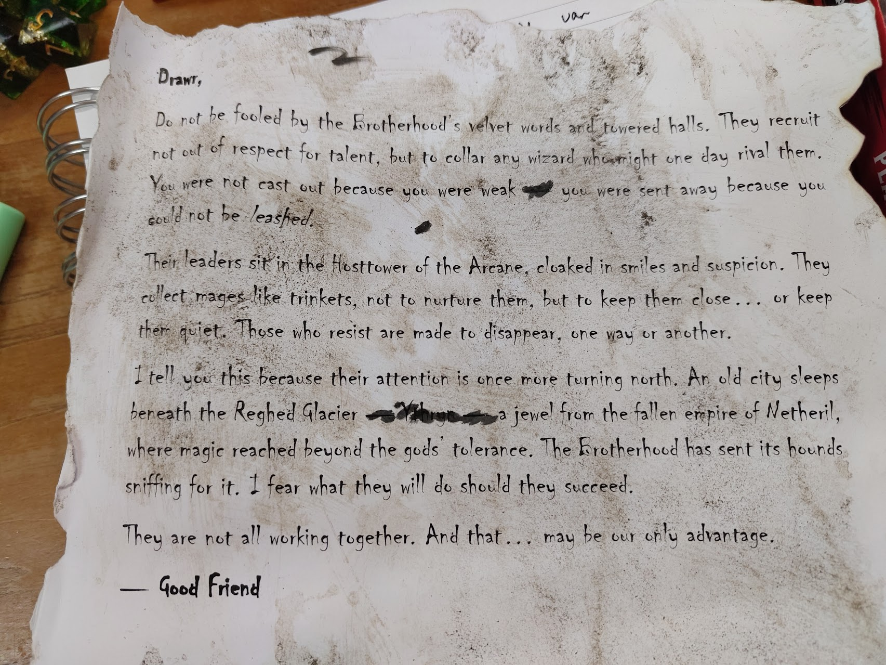

Session 8

Dag 22 (nogsteeds)¶
Vorige sessie (Session 7) ging de zon ineens weer schijnen omdat Skog Traustur (Jesse) dat weather apparaat heeft geactiveerd... Beveiligers van Auriel zijn naar ons onderweg naar Black Cabin
Tegelijkertijd wordt er een nieuwe cold spell aangezet. Er komen memphids uit het oosten, 2 ervan kunnen we doden doordat Elena Footshadow (Lies) een pijl in het oog weet te schieten BAM! In het gevecht komen we erachter dat een van de memphids Cevic Cautrum is... (hij was toch dood?) Andere persoon was iemand die was geofferd (de elf van de Karavaan van Torga) Cevic Cautrum verblindt Skog Traustur (Jesse), uiteindelijk zijn Cevic Cautrum en de elf dood. Drawr Poof (Lars) is ook bijna dood. Althea Sardothien (Sara) probeert Skog Traustur (Jesse) rustig te maken van z'n rage, Elena Footshadow (Lies) healt Drawr Poof (Lars) met berries.
Cevic Cautrum en de elf hebben een brief bij zich, Althea Sardothien (Sara) heeft de brieven gevonden. De brieven zijn geschreven aan Drawr Poof (Lars) (van ythryn). Jesse zorgt dat cevic en de elf tot as begraven worden.

Letter from Goodfriend (1) Beste Drawr,Nass Lanthomir moest vanuit de hosttower weg om 'ervaring' op te doen, maar heeft per ongeluk het geheime plan van de Archin Brotherhood afgeluisterd. Ze heeft hen naar Bryn Shander gevolgd en doet nu alsof ze hun kan helpen.
De waarheid? Ze wilt de Codicil of White (boek) vinden, een van Auril's handlangers, die blijkt de weg naar Ythryn te weten. Ze is vertrokken naar Sea of Moving Ice.
Als ze het boek vind, gebeurt er iets wat beter niet gebeurt...

Letter from Goodfriend (2) Beste Drawr,Archin Brotherhood verzamelt wizards die mogelijk ooit tegen hen kunnen zijn, verre van respectvol. Je bent er uitgestuurd omdat je niet handelbaar bent, niet omdat je te zwak bent.
De leiders zitten in de Arcane Hosttower. Ze verzamelen magiers. Wie tegenstribbelt verdwijnt.
Een oude stad slaapt onder de Reghed Glacier, een juweel van het gevallen rijk Netheril waar veel magie sterker was dan die van goden. De Archin Brotherhood is er naar opzoek, met een grote kans op slagen.
Het enige wat in ons voordeel is, is dat ze niet aan het samenwerken zijn.
In Lonelywood ❄️ is iedereen feestelijk, Skog Traustur (Jesse) verteld iemand wat we hebben gedaan, ze lachen hem uit maar Drawr Poof (Lars) doet friends spell, zodat we naar Nincy Huddle gaan. Daar rusten we uit.
Dag 23¶
long rest
Dag 24¶
Skog Traustur (Jesse) heeft slecht geslapen. Wanneer lars niest, ineens staat er een unicorn. Althea Sardothien (Sara) krijgt 73 goud en de unicorn verdwijnt weer. Althea Sardothien (Sara) gaat trainen en doet dat met een boom, ondanks wat tegenslagen wint ze!
Drawr Poof (Lars) gaat naar de The Lucky Liar, praat met Danee Xotal. -1 goud voor veel bier, als cadeau voor Nincy Huddle.
Elena Footshadow (Lies) vraagt in The Happy Scrimshander over Danika Graysteel, is blijkbaar het bos in gegaan. komt haar tegen, zegt dat ze een persoon uit Archin Brotherhood kent. (de persoon was blijkbaar niet Danika Graysteel maar een oude chique dame.)
We gaan naar Revil's End, beneden is een boot die naar de Sea of Moving Ice gaat. Bij de gevangenis kloppen we aan, deur gaat open en we moeten wapens inleveren. Vaelish Gant is gevangene 237. Voordat we hem spreken doet Drawr Poof (Lars) disguise self. Vaelish Gant verteld dat Archin Brotherhood de magie van Ythryn wilt terug krijgen. Tijdens het gesprek heeft Elena Footshadow (Lies) sjans met Vaelish Gant. Vellynne Harpell is ook onderdeel van de Archin Brotherhood, te herkennen aan haar witte uil.
We gaan naar Bryn Shander ❄️ om Dufesa Shane te updaten met wat we hebben gedaan. we krijgen +250 goud.
Niet zomaar een toren: de verloren toren van Spire of Netheril, ten oosten van Caer-Konig ❄️.
Naar The Caer, lies geeft de beveiligers laxerende scones. 1 persoon is lactose intolerant dus die is niet affected, die is knocked out. Tijdens het verder onderzoeken van The Caer, waarschijnlijk zit in kamer 8 een cultist. In kamer 9 zit een rode thiefling, kamer eronder zit een dwarf. In de kelder zit een gang met water, aan het eind van de gang drijft een boot. In de gang zit ook een albino thiefling en een Arch-devil.
nu bij de kamer van de nieuwe townspeaker (hij zat te kakken op de wc), die Kranok gevangen houd. cultisten hebben het leiderschap overgenomen (Knights of the Black Sword). Ze hebben amuletten, netzoals die ene thieflings (Vermiste zoon uit Bremen 🚩??). De bewakers zaten allemaal op de wc, die we hebben opgeblazen. ook de leider is verdwenen
We willen Avarice (thiefling) bevechten, maar gooit ons allemaal naar de Ethereal Plane, behalve lars. de thiefling waarschuwt ons.
We zien een witte uil (Vellynne Harpell??) gelukkig worden we met rust gelaten en volgen we voetstappen van dwergen richting de Ruined Watchtower, daar zit een geheim luik. EINDE SESSIE
Neverwinter is een machtig iemand, heeft invloed op wat er gebeurt in Icewind Dale, Midwinter is een verloren dorp.